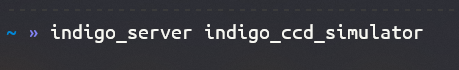

3. Demo¶
Here, let’s see a tiny demo that shows how to use the INDIGO client library.
First of all, we have to launch an INDIGO server to have something to connect to. To do this, we open a terminal and write:
{kind=link}
In order to do this, you must have installed INDIGO in your computer. You can download it here. This starts a simulator of a CDD device.
So we can continue, if you also install the INDIGO Control Panel, you can watch all the changes taking place in the program. Let’s see how it is displayed:
{kind=link}
If you don’t know how INDIGO works, you can find all the information you need to understand it here.
Now we can start talking about the source code. Primarily, we have to import the INDIGO Python Bib to work with all the functions in there.
from INDIGO_Client import INDIGOServerConnection
The file INDIGO_Client.py must be in the same folder as your code. If it is in another folder, you must use the relative path to this file.
Now, we have a function that will work as a listener for a property. This shows a message when one property is turned on.
def connected(property):
if(property.getElementByName('CONNECTED').getValue() == 'On'):
print("The device " + str(property.getDevice().getName()) + " is connected")
First of all, we need to make the connection with the server. Therefore, we need to provide the IP address and port of the server.
The default port for INDIGO is 7624.
host = "172.30.124.160" # This is an example of IP address
port = 7624
And now we make a connection to the server by instantiating an INDIGOServerConnection and then we create the connection. The parameters are:
- The name that you want to give to the server.
- Host.
- Port.
serverConnection= INDIGOServerConnection("Server", host, port)
serverConnection.connect()
It is recommended to wait some time for the client to read all the data from the server.
time.sleep(0.5)
Now we have established the connection and we can make all we can do with a INDIGO server. For example:
- We can add a listener to some devices.
device= serverConnection.getDevices()
devices= []
for deviceName, device in serverConnection.getDevices().items():
serverConnection.addPropertyListener(deviceName, 'CONNECTION', connected)
devices.append(device)
- We can turn on some device.
We check if the first device in the list has the CONNECTION property. And if true, we send the element CONNECTED to On.
if 'CONNECTION' in devices[0].getProperties():
devices[0].getPropertyByName('CONNECTION').sendValues({"CONNECTED":"On"})
- We can enable BLOB obbjets. In this case I use a CCD_IMAGE property, because I know it has a BLOB property.
time.sleep(0.5)
serverConnection.enableBLOB()
serverConnection.sendBLOBMessage(devices[0].name, 'CCD_IMAGE')
- Now we can take a photo with the property CCD_EXPOSURE.
devices[0].getPropertyByName('CCD_EXPOSURE').sendValues({"EXPOSURE":"2"})
- We must wait for the time we indicated in the EXPOSURE above.
time.sleep(2.5)
- And now we can see the photo with the property CCD_IMAGE.
devices[0].getPropertyByName('CCD_IMAGE').sendValues({"IMAGE":str(devices[0].getPropertyByName('CCD_IMAGE').getElementByName('IMAGE').getPath())})
The image will be downloaded in a folder named images and it will be displayed for viewing.
- Now we turn off the device and disconnect the client from the server.
devices[0].getPropertyByName('CONNECTION').sendValues({"DISCONNECTED":"On"})
serverConnection.disconnect()
You can see and download the source code here.